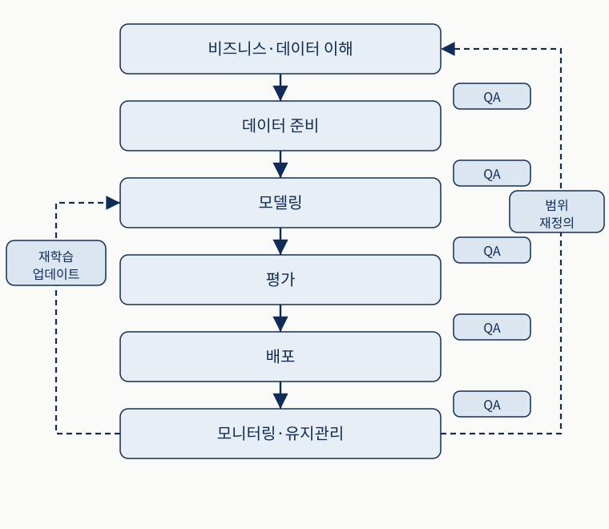
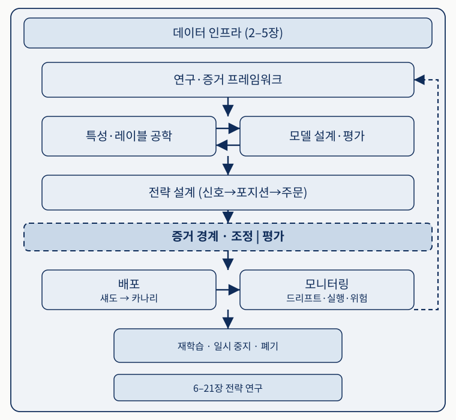
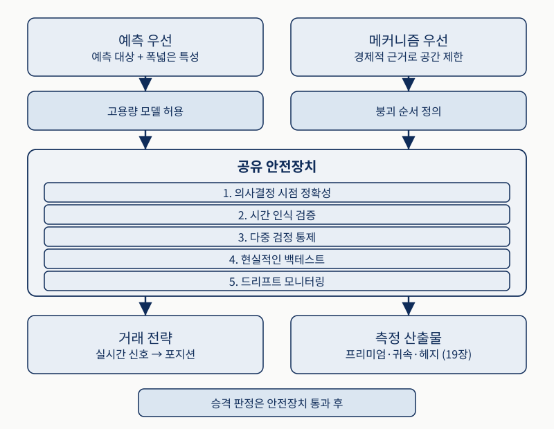
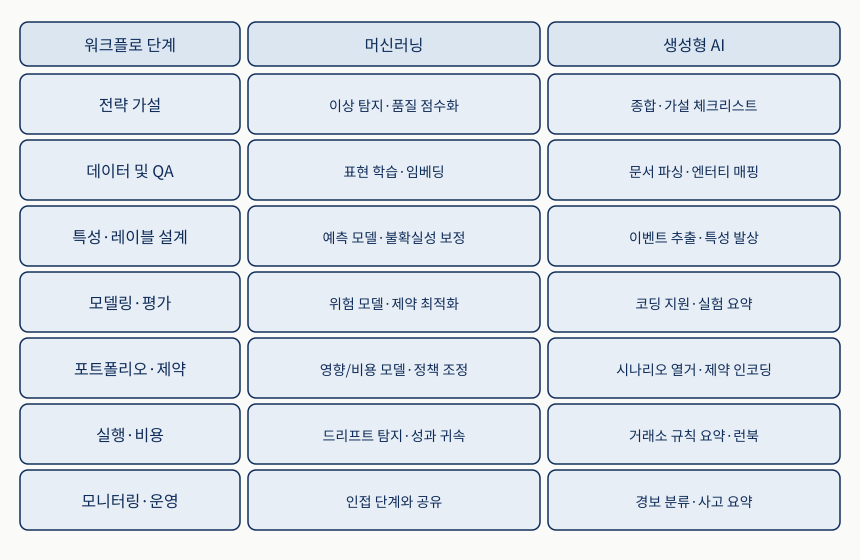
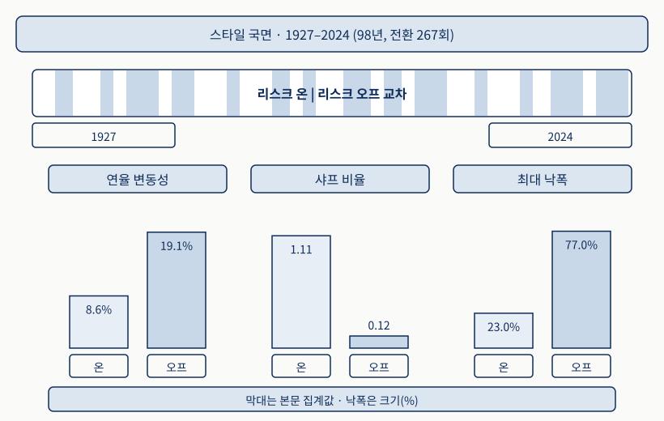
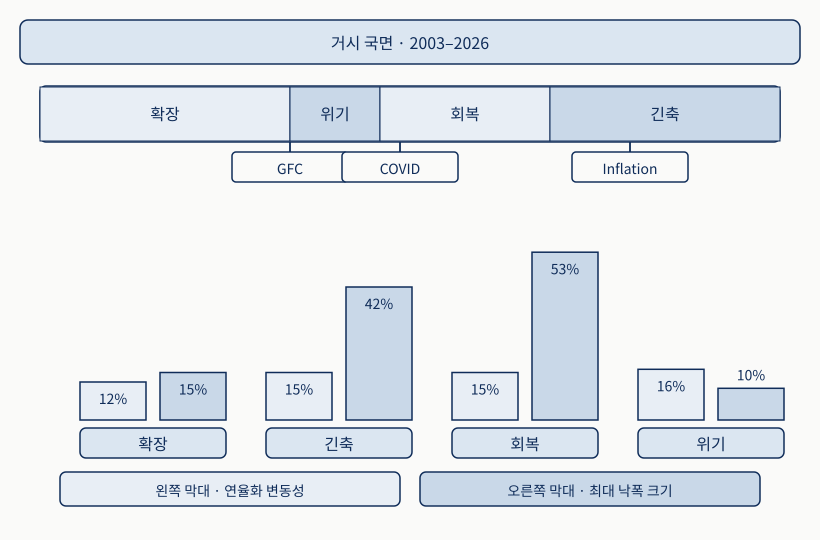

프로세스가 곧 경쟁 우위입니다
Chapter 1
0. 핵심 요약
이 장은 모델 고르기에 관한 장이 아닙니다. 2020년부터 2025년 사이에 유동성 충격, 심리 충격, 인플레이션에 따른 거시 전환, 주식 집중 쏠림이 차례로 지나가면서, 2010년대 데이터에 맞춰 보정한 가정들이 함께 압박을 받았습니다. 이 사건들이 새로운 문제를 만든 것은 아닙니다. 원래 있던 취약성을 드러냈을 뿐입니다. 지진이 부실 시공을 만들어 내지 않고 이미 있던 부실 시공을 무너뜨려 보여 주는 것과 같은 관계입니다.
그래서 이 장의 답은 국면 전환을 더 잘 예측하는 것이 아니라, 아이디어를 엄격히 검증하고 성과를 체계적으로 감시하며 악화에 사전 정의된 방식으로 대응하는 워크플로를 갖추는 것입니다. 그 워크플로에는 이름이 있습니다. 지속적인 데이터 인프라 위에 반복 연구 루프를 세우고, 탐색과 확인을 증거 경계로 갈라놓는 ML4T 워크플로입니다.
- 문제 — 모델을 아무리 정교하게 만들어도 왜 성과가 무너지는가? 시장의 무엇이 바뀌는가?
- 메커니즘 — 데이터 인프라와 전략 연구는 어떻게 나뉘고, 증거 경계는 무엇을 지키는가?
- 판단 — 인과 추론과 생성형 AI는 어디에 두어야 하고, 국면 지도는 무엇에 쓰는가?
| 절 | 질문 | 이 장의 답 | 실무 판단 |
|---|---|---|---|
| 1.1 | 왜 프로세스인가 | 영구히 최적인 모델은 없다 | 예측 대신 검증·감시·사전 대응에 투자 |
| 1.2 | 워크플로의 구조는 | 데이터 인프라 + 반복 연구 루프 | 증거 경계를 넘은 결과만 배포 |
| 1.3 | 새 도구는 어디에 | 규율의 대체물이 아니라 증폭기 | 자동 생성 결과도 승격 전 검증 대상 |
| 1.4 | 국면은 무엇에 쓰나 | 수익률 타이밍이 아니라 위험 관리 | 취약성과 연결된 지표만 감시 |
| 1.5 | 독립 연구자는 | 외부 문지기가 없어 자체 거버넌스 필요 | 문서화·점검 지점·재사용 인프라 |
1.1 프로세스 규율이 중요한 이유 — 정교한 모델만으로는 부족한 까닭
금융시장은 추론 과정의 약점을 실제 비용으로 드러냅니다. 이 절이 답하는 질문은 왜 지금 모델의 정교함보다 프로세스 규율의 상대적 가치가 더 커졌는가입니다.
세 가지 변화가 규율의 가치를 끌어올렸다
불안정하거나 잡음이 큰 작은 효과를 의심 없이 믿는 문제, 유동성·거래 비용·실행 시점·용량 같은 현실 마찰을 빼놓는 문제는 오래전부터 백테스트와 실거래의 간극을 키워 왔습니다. 달라진 것은 세 가지입니다. 첫째로 관계가 갑자기 끊어지거나 서서히 이동하면서 한 기간에 맞았던 가정이 다음 기간에 틀릴 수 있게 되었고, 둘째로 시험할 수 있는 선택지가 늘어나 과적합을 만들기는 쉬워졌지만 그것이 과적합임을 밝혀내기는 더 어려워졌으며, 셋째로 연구 도구의 가속이 더 빠른 반복과 더 나은 모니터링만 아니라 데이터 마이닝과 취약한 시스템의 배포도 같은 속도로 빠르게 만들었습니다.
두 번째 변화는 사진 편집 도구가 좋아진 상황에 견줄 수 있습니다. 도구가 좋아지면 멋진 사진을 만들기도 쉬워지지만, 보정으로 꾸며 낸 사진과 실제로 잘 찍은 사진을 구별하기는 오히려 어려워집니다. 비유가 성립하는 지점은 거기까지입니다. 사진에서는 원본을 대조하면 판정이 끝나지만, 금융 시계열에는 대조할 원본이 없고 표본 자체가 제한되어 있습니다. 그래서 판정을 사후 대조가 아니라 사전 절차로 옮겨야 합니다.
네 가지 충격파와 가정의 취약성
2020년 팬데믹에서는 국채 중개 기능이 압박받고 상관관계가 급변하면서 분산투자 가정이 약해졌습니다(Duffie, 2020). 자산 간 관계가 고정된 구조가 아니라 국면에 의존할 수 있음을 보여 준 사례입니다. 2021년 밈 주식 사태에서는 심리와 포지셔닝이 만든 자금 흐름이 펀더멘털을 상당 기간 압도했고, 정상화가 더 빨리 일어날 것이라고 가정해 짧은 보유 기간과 위험 한도를 둔 평균회귀 시스템이 특히 흔들렸습니다. 2021–2023년 인플레이션 급등은 변동성을 높이고 주식과 채권의 공동 움직임을 바꾸어, 저인플레이션 10년에 맞춘 모델과 흔히 쓰던 헤지 경험칙을 함께 불안정하게 만들었습니다(Marshall, 2023). 주식 집중 사태에서는 지수 수익률이 소수 초대형 종목에 이례적으로 집중되면서, 겉으로는 시장 익스포저여도 실제로는 집중 익스포저가 될 수 있다는 점이 드러났습니다.
네 사건의 원인은 서로 다르지만 남긴 교훈은 같습니다. 최근 관측치로 학습한 관계는 환경이 바뀌면 믿기 어렵다는 것입니다. 그리고 유동성 위기, 심리의 연쇄 반응, 정책 변화, 쏠림은 다른 촉발 요인으로 다시 나타날 수 있습니다. 화재의 원인은 매번 달라도 건물 점검표에는 소화기 압력과 비상구 개방과 감지기 작동이 고정 항목으로 들어가는 것과 같은 이유로, 안정된 조건만 전제한 워크플로는 불안정성과 성능 저하를 찾아내는 점검을 명시적으로 넣어야 비로소 완결됩니다.
변화를 설명하기 위한 어휘
적응형 시스템을 운영하려면 데이터 생성 과정의 변화를 정확히 부를 수 있어야 합니다. 흔히 섞어 쓰는 개념들이 연구와 프로덕션에서 맡는 역할은 서로 다릅니다. 한 가게의 매출이 떨어졌을 때 "리모델링한 날부터 달라졌다"는 시점 진술, "여름에는 원래 이렇다"는 상태 진술, "우리 매출 예측표가 요즘 계속 틀린다"는 예측 오류 진술이 서로 다른 말인 것과 같습니다. 다만 가게의 예시에서는 원인을 직접 물어볼 수 있지만, 시장에서는 그럴 수 없어서 어휘를 나누는 일 자체가 진단 절차가 됩니다.
| 개념 | 묻는 것 | 예 | 연구·운영에서의 역할 |
|---|---|---|---|
| 구조적 단절 | 시스템이 언제 바뀌었는가 | COVID-19의 시작 | 변화 지점의 식별 |
| 국면 | 어떤 상태가 지속되는가 | 저인플레이션 대 고인플레이션 | 스트레스 테스트의 구간 분할 |
| 데이터 드리프트 | 입력 분포가 이동했는가 | 손님 구성 자체의 변화 | 파이프라인·특성 점검의 경보 |
| 개념 드리프트 | 특성과 목표의 관계가 바뀌었는가 | 같은 손님의 다른 주문 | 모델 오류 관점의 같은 기저 변화 |
| 온라인 탐지 | 지금 알 수 있는 정보만으로 찾을 수 있는가 | 비수기 진입의 실시간 인지 | 라이브 전략의 운영 과제 |
드리프트는 같은 변화를 모델 쪽에서 바라보는 표현이며, 운영 중 드리프트가 감지되었다는 사실만으로 원인을 진단할 수는 없습니다. 데이터 무결성, 특성 유효성, 실행 조건, 국면 익스포저를 조사하라는 경보로 받아들여야 합니다. 이 구분이 모니터링의 임무를 선명하게 만듭니다. 연구용 백테스트에서는 전체 이력을 본 뒤 상태를 붙이는 사후 레이블링을 사용할 수 있어도, 라이브 전략은 미래를 본 레이블에 의존할 수 없습니다.
영구히 최적인 모델은 없습니다
하나의 모델이 모든 국면에서 무기한 최적으로 남을 수는 없습니다. 따라서 경쟁력은 실행하기 어려운 국면 전환 예측보다, 아이디어를 엄격히 검증하고 성과를 체계적으로 감시하며 성능 악화에 미리 정한 방식으로 대응하는 능력에서 나옵니다(Fabozzi and Stenholm, 2025). Andrew Lo의 적응적 시장 가설(2004)도 같은 방향을 가리킵니다. 시장 효율성을 늘 유지되는 조건이 아니라 진화의 결과로 보는 관점으로, 서로 다른 참여자들이 학습하고 경쟁하며 적응하는 가운데 효율성의 정도가 참여자 구성·자본·기술·규제·기회의 조합에 따라 달라집니다.
한 가지 낚시 미끼가 모든 계절과 모든 물때에 최고일 수 없는 것과 비슷합니다. 물고기도 학습하고, 같은 자리에 낚시꾼이 몰리면 그 자리의 조과가 떨어집니다. 자리가 붐빌수록 조과가 떨어지는 현상은 자본이 몰려 활용될수록 수익 기회가 약해진다는 서술에, 계절이 다시 돌아오면 그 자리가 살아나는 것은 조건이 다시 유리해지면 전략이 살아날 수도 있다는 서술에 각각 대응합니다. 비유의 한계는 명확합니다. 낚시에서는 계절을 달력으로 알 수 있지만, 시장에서는 지금이 어느 국면인지를 실시간으로 알기 어렵습니다. 그 어려움이 뒤의 1.4절이 다루는 문제입니다.
그래서 지속 가능한 우위의 원천은 정답 모델 선택보다 다음 루프에 더 많이 의존합니다. 성능 저하를 일찍 찾고, 잡음과 국면 변화를 구별하며, 여전히 견고한 전략으로 자본을 다시 배분하는 연구-운영 전환 루프입니다.
연구에서 프로덕션으로 이어지는 시스템
거래용 머신러닝을 서로 끊어진 실험의 집합으로 다루면 실패에서 배운 내용을 다음 결정에 축적하기 어렵습니다. López de Prado(2018)가 말한 알파 공장은 명시적 제약 아래 전략을 생성·평가·배포·모니터링하는 반복 가능한 파이프라인입니다. 매번 다른 방식으로 시제품을 만드는 공방에서는 같은 실패를 반복하기 쉽지만, 단계가 고정된 공장에서는 어느 단계에서 불량이 났는지 기록이 남아 다음 생산에 반영됩니다.
이 원리는 트레이딩에만 해당하지 않습니다. 응용 머신러닝과 품질 공학에서도 모델은 모니터링·진단·통제된 개입까지 포함한 생애주기의 한 구성요소이며, 산업 현장에서는 알고리즘 자체보다 프로세스가 실패를 더 자주 지배합니다(Gartner, 2018; Ryseff et al., 2024). 다만 트레이딩에는 고유한 증폭 장치가 있습니다. 비정상성과 거래 비용 때문에 작은 데이터·모델 오류가 큰 금전 손실로 커지고, 모델링의 성공을 예측 정확도로만 정의할 수도 없습니다. 택배 경로 예측이 90% 맞아도 틀린 10%가 매번 왕복 100km 재배송이라면 정확도만으로 그 사업이 남는다고 말할 수 없는 것과 같습니다. 최종 목표는 시장 조건이 변하는 가운데 비용을 차감한 뒤에도 남는 위험조정 성과입니다.

위에서 아래로 여섯 단계를 읽고, 단계 사이의 QA 배지와 아래에서 되돌아오는 두 점선 경로를 함께 봅니다. 원본 그림 1.1의 단계 구성과 피드백 방향을 보존하고 표현만 재구성했습니다.여섯 단계는 범위와 성공 기준과 구현 가능성을 정하는 비즈니스·데이터 이해에서 출발해, 데이터 준비, 모델링, 평가, 배포를 거쳐 모니터링·유지관리로 이어집니다. 도표 아래의 피드백 경로가 중요합니다. 운영 결과는 모델링 단계의 업데이트·재학습으로 돌아갈 수 있고, 더 근본적인 문제가 발견되면 비즈니스·데이터 이해 단계에서 범위를 다시 정합니다. 준공한 건물에 누수가 생겼을 때 방수 시공만 다시 하면 되는 경우도 있지만 배수 설계 자체가 틀렸다면 설계로 돌아가야 하는 것과 같은 구조입니다. 그래서 품질 보증은 마지막 검사 한 번이 아니라 생애주기 전체의 점검망입니다. CRISP-DM(2000)이 절차를 구조화했고 CRISP-ML(Q)(Studer et al., 2021)가 이를 현대 ML 시스템에 맞게 확장했습니다.
트레이딩에 이 생애주기를 적용할 때는 제약을 더해야 합니다. 비정상성 때문에 실질적으로 유효한 표본이 제한되고, 누출과 특정 시점 기준 오류가 생길 여지가 넓습니다. 기출문제를 풀면서 답지를 슬쩍 본 채 채점하면 연습 점수는 높게 나오지만 실제 시험 점수를 예측하지 못하는 것과 같은 문제이며, 문제를 풀던 시점에 답지가 공개돼 있지 않았다는 사실을 지키는 일이 특정 시점 기준 정확성입니다.
| 실패 | 무엇이 일어나는가 | 안전장치 |
|---|---|---|
| 데이터 마이닝과 서사적 과적합 | 무엇이 가설을 반증할지 정하지 않고 결과를 본 뒤 가설을 붙인다 | 반증 조건의 사전 명시 |
| 누출과 비특정 시점 기준 데이터 | 당시 알 수 없던 수정치·생존 편향·기업행위·타임스탬프 오류를 사용한다 | 의사결정 시점 정렬 |
| 다중 검정과 선택 편향 | 많은 변형을 탐색한 뒤 우연히 작동한 하나를 신호로 오인한다 | 시행 기록과 선택 조정 추론 |
| 구현 가능성 무시 | 예측 가능성과 비용·마찰 뒤에 남는 거래 가능한 우위를 혼동한다 | 범위 설정 단계의 구현 점검 |
| 매몰 비용과 지연된 청산 | 현재 증거가 아니라 과거에 효과가 있었다는 이유로 보유를 유지한다 | 사전 정의된 폐기 트리거 |
다섯 실패는 로또 번호를 100가지 조합으로 사서 한 조합이 맞았을 때 벌어지는 일에 한꺼번에 대응시켜 볼 수 있습니다. 100가지를 탐색한 것이 다중 검정과 선택 편향, 맞은 뒤에 "생일과 기념일을 섞은 규칙"이라는 이름을 붙이는 것이 서사적 과적합, 당첨 발표 후의 정보를 구입 시점에 알았다고 가정하는 것이 누출, 당첨금에서 구입비와 세금을 빼지 않는 것이 구현 가능성 무시, 한 번 맞았던 조합을 계속 사는 것이 매몰 비용과 지연된 청산입니다. 로또와 시장의 결정적 차이는 시장에는 실제 경제적 메커니즘이 있을 수 있다는 점이며, 그 차이 때문에 탐색 자체를 금지하지 않고 탐색의 규모를 기록해 해석하는 방식을 택합니다.
규율 없는 연구는 모호한 가설에서 빠른 백테스트와 성급한 배포로 넘어간 뒤 성과가 무너지면 설명을 사후에 붙입니다. 규율 있는 연구는 가정을 밖으로 드러내고, 최적화 전에 점검 기준을 고정하며, 가설·검증·모니터링을 하나의 피드백 루프로 잇습니다. 두 방식에 들어가는 총노력은 시간이 지나면 비슷할 수 있지만, 후자만 실패에서 얻은 학습을 축적하고 환경 변화에도 대응할 수 있습니다.
1.2 ML4T 워크플로 소개 — 데이터에서 모니터링까지 이어지는 순환 구조
1.1절의 불안정성은 고정된 모델을 취약하게 만듭니다. 이 절이 답하는 질문은 그 취약성에 맞선 현실적 구조는 무엇인가이며, 답은 데이터 인프라와 전략 연구를 분리하고 다시 탐색과 확인을 갈라놓는 생애주기 규율입니다.
이 워크플로를 지배하는 제약은 제한된 유효 이력, 특정 시점 기준 데이터 무결성, 시간 순서를 지키는 평가, 비용을 반영한 구현 가능성, 위험 한도입니다. 운영 모니터링은 성능이 나빠졌다는 사실에서 멈추지 않고 신호 약화와 실행·위험 통제의 실패를 구별해야 합니다. 배달 지연이 늘었을 때 요리가 늦어졌는지 배달 기사가 부족했는지 주문이 몰렸는지를 나누지 않으면 어떤 조치를 해야 할지 알 수 없는 것과 같습니다.

바깥 계층에서 안쪽 루프로 읽고, 특성 공학과 모델 개발 사이의 양방향 화살표와 가운데 점선 띠를 확인한 뒤 아래에서 위로 돌아오는 피드백을 봅니다. 원본 그림 1.2의 계층 구분과 경계 위치, 반복 방향을 보존했습니다.도표 전체를 감싸는 바깥 계층이 데이터 인프라이고, 그 안의 전략 연구는 연구 프레임워크에서 특성 공학으로 진행하며 특성 공학과 모델 개발 및 전략 설계 사이를 양방향으로 반복합니다. 조정과 평가를 가르는 점선이 증거 경계이며, 이 선을 건넌 결과만 배포와 모니터링으로 내려갑니다. 운영 결과는 재학습·일시 중지·폐기라는 피드백을 통해 연구 프레임워크로 되돌아옵니다.
두 계층의 역할은 다릅니다. 데이터 인프라(2–5장)는 모든 연구와 실거래가 함께 사용하는, 재현 가능하고 감사 가능하며 특정 시점 기준으로 정확한 데이터를 제공합니다. 전략 연구(6–21장)는 아이디어를 실제 거래 가능한 시스템으로 다듬는 반복 루프입니다. 여러 연구실이 공용 측정 장비를 한 곳에서 교정·관리하고 각 연구실이 그 장비로 자기 실험을 반복하는 구조와 같아서, 장비가 틀어져 있으면 모든 연구실의 결과가 함께 틀립니다.
한 모듈의 산출물은 다음 모듈의 입력이 되지만 흐름은 직선이 아닙니다. 실거래 결과가 가설, 데이터 점검, 구현 가정을 다시 수정하므로 전체 구조는 순환합니다. 신제품 반품 사유를 분석해 보니 포장이 아니라 제품 설명이 문제여서 기획 단계의 고객 정의부터 다시 손보는 경우처럼, 문제가 드러난 지점과 고쳐야 할 지점이 다를 수 있습니다. 또한 이 구조에 머신러닝이 반드시 들어가야 하는 것은 아닙니다. 신호가 재량적 연구, 규칙 기반 시스템, 학습 모델 가운데 어디에서 나왔든 같은 생애주기와 검증 규칙을 적용할 수 있습니다.
데이터 인프라 — 백테스트를 믿을 수 있게 만드는 기반
데이터 인프라는 프로젝트 초기에 한 번 끝내는 준비 작업이 아니라 계속 축적하는 투자입니다. 트레이딩에서 가장 위험한 데이터 오류는 대개 코드를 즉시 멈추지 않습니다. 미래 정보가 새어 들어가거나 수정치를 잘못 처리하거나 비현실적인 실행 가정을 데이터에 암묵적으로 넣어 백테스트를 그럴듯하게 부풀립니다. 체중계의 영점이 3kg 낮게 틀어져 있으면 오류 메시지가 뜨지 않고 매일 기분 좋은 숫자가 나오다가 건강검진에서야 문제가 드러나는 것과 같습니다. 그래서 프로젝트마다 같은 뜻으로 해석되는 데이터 규칙과 불변조건을 정해 결과를 비교 가능하게 만들어야 합니다.
실무에서 확인할 축은 네 가지입니다. 벤더와 피드를 고르고 식별자를 검증하며 결측치 처리·표본추출·수정 정책을 문서화하는 소싱과 범위, 사건 발생 시각과 공표 시각을 구분하고 각 특성을 의사결정 당시 이용 가능했던 정보에 맞추는 시간과 가용성의 의미론, 주식의 기업행위와 펀더멘털 수정·선물의 롤링과 연결 관례·디지털 자산의 거래소와 펀딩 규칙 같은 자산군별 메커니즘, 그리고 생존자 편향·오래된 호가·잘못된 조정·식별자 매핑 오류를 검사하고 데이터셋을 똑같이 재생성할 수 있게 하는 품질 불변조건과 감사 가능성입니다. 병원 진료 기록에서 검사 기관과 검사·통보 시각과 항목별 단위와 중복 등록번호를 각각 확인하는 일에 그대로 대응합니다.
2–5장은 거래와 호가를 봉으로 만드는 미시구조 인식 데이터, 펀더멘털·대체 데이터의 특정 시점 기준 처리, 연구 속도에 영향을 주는 저장·성능 선택을 다룹니다. 합성 데이터도 선택적 도구로 소개합니다. 희귀 사건 증강, 개인정보 보호, 스트레스 테스트에는 도움이 될 수 있지만, 분포가 맞지 않거나 실행 조건이 비현실적이면 오히려 연구자를 오도할 수 있습니다. 시뮬레이션 화재 훈련의 연기 확산 속도가 현실과 다르면 훈련이 잘못된 자신감을 주는 것과 같은 위험입니다.
연구 및 증거 프레임워크 — 무엇을 성공으로 볼지 먼저 고정하기
ML 전략 연구는 계수 하나를 시험하는 일로 끝나지 않습니다. 실제 평가 대상은 데이터 선택, 특성군, 모델 클래스, 선택 규칙이 함께 거래를 만드는 연구 파이프라인이며, 이 파이프라인은 상호작용·국면 의존성·부호 반전처럼 미리 예상하지 못한 관계도 찾을 수 있습니다. 그러므로 핵심 질문은 계수가 0과 다른지가 아니라 실제 운용 방식으로 평가한 전체 파이프라인이 거래 가능한 가치를 만드는가입니다. 새 원두 하나가 맛있다는 사실만으로 카페가 잘된다고 말할 수 없고, 원두 선택과 로스팅과 추출과 추천 규칙이 함께 재방문을 만드는 것과 같습니다.
많은 금융 전략에는 과소반응, 유동성 공급, 위험 프리미엄, 기관 자금 흐름처럼 효과의 존재를 설명할 만한 경제적 메커니즘이 있습니다. 메커니즘은 탐색 방향을 잡고 나중에 성능을 해석하거나 감쇠 원인을 진단하는 데 도움을 주지만, 그럴듯한 메커니즘만으로 거래 명세를 대신할 수는 없습니다. 신뢰할 수 있는 증거를 만들려면 의사결정 시점, 거래 가능 유니버스, 목표 기간, 비용 가정, 평가 프로토콜을 미리 적고 성공·실패 기준을 고정해야 합니다.
| 항목 | 확정할 내용 | 동결하지 않으면 |
|---|---|---|
| 의사결정 시점의 정확성 | 매 시점 이용 가능했던 정보와 특성의 가용 시점 정렬 | 누출이 성과를 만든다 |
| 거래 가능성과 유니버스 규칙 | 거래 대상, 유동성·용량 필터, 공매도 규칙 | 실행 불가한 대상이 섞인다 |
| 레이블과 기간 정의 | 목표 및 보유 기간, 곧 성공의 의미 | 최적화 대상이 흔들린다 |
| 비용 모델 클래스 | 스프레드·슬리피지·자금 조달·시장 충격 중 넣을 마찰 | 비용 뒤 우위를 알 수 없다 |
| 평가 프로토콜 | 워크포워드 구조, 홀드아웃 설계, 시행 기록 | 탐색과 확증이 섞인다 |
요리 경연 규칙을 미리 정할 때 재료 수령 시점, 사용 가능 재료, 잘한 요리의 정의, 재료비 계산 범위, 심사 순서를 각각 못 박아 두는 일에 대응합니다. 재료비의 세부 단가는 나중에 조사해도 되지만 어떤 항목을 넣을지는 미리 정하는 것처럼, 세부 매개변수를 데이터에서 추정하더라도 모델 클래스 자체는 고정합니다.
실제 반복은 특성 공학, 모델 개발, 전략 설계에서 일어납니다. 진단 결과를 보고 대리 변수, 목표, 모델 클래스, 거래 규칙을 바꾸는 일은 정상적인 연구 활동입니다. 프레임워크가 지켜야 할 것은 측정 방식과 평가 규칙입니다. 같은 저울과 같은 측정 절차를 유지한 채 운동 방법을 바꾸면 개선이지만 둘을 함께 바꾸면 무엇 때문에 숫자가 좋아졌는지 알 수 없는 것과 같은 이유로, 평가 규칙을 붙잡아 두어야 개선이 더 강한 신호에서 왔다고 해석할 수 있습니다.
특성 공학과 모델 개발 — 서로를 갱신하는 중첩 루프
신호 연구는 공학적으로 만든 데이터셋을 예측값, 점수, 순위, 상태 추정치처럼 거래 의사결정에 쓸 입력으로 바꿉니다. 특성 공학과 모델링을 별도 직선 단계로 두기보다 중첩된 루프로 다뤄야 하는 이유는 한쪽의 진단이 다른 쪽의 설계를 계속 갱신하기 때문입니다. 안경 도수를 맞출 때 렌즈를 바꿔 시력을 재고 그 결과를 보고 다시 렌즈를 조정하는 왕복과 같으며, 시력이 안 나오는 원인이 렌즈에 있을 수도 측정 방식에 있을 수도 있다는 점까지 대응합니다.
특성·레이블 공학(7–10장)은 선도 수익률, 변동성, 낙폭 위험, 체결 품질처럼 시장 구조를 측정 가능한 입력과 목표로 표현합니다. 낮은 신호 대 잡음비, 모델 목적과 거래 목적의 불일치, 폭넓은 탐색에서 나오는 거짓 발견이 주요 제약입니다. 정보 계수, 롤링 안정성, 국면별 분할 같은 비교적 가벼운 평가로 후보를 먼저 거르면 고용량 모델에 들어가기 전 검증 부담을 줄일 수 있습니다. 지원자가 수천 명일 때 서류와 짧은 통화로 먼저 걸러 낸 뒤 비용이 큰 심층 면접을 진행하는 순서와 같습니다.
모델 설계와 평가(11–15장)는 강한 기준선과 해석 가능한 진단에서 시작하고 근거가 있을 때만 모델 용량을 높입니다. 유연성이 커질수록 누출 점검, 여러 국면에서의 안정성, 교란에 대한 민감도를 더 엄격히 확인해야 합니다. 모델의 실패는 데이터 정렬, 목표 누출, 불안정한 측정, 목표 정의와 거래 목적의 불일치에서 올 수 있으므로 모델 진단을 특성 진단으로도 읽어야 합니다. 자동차가 힘이 없을 때 곧바로 엔진을 바꾸기보다 연료와 공기압과 브레이크를 먼저 보는 순서와 같습니다. 21장은 이 흐름을 체결·배분 정책을 직접 학습하는 강화학습 에이전트로 넓히되, 강화학습을 배포 단계가 아니라 11–15장의 지도학습 방법과 나란히 둡니다.
시간 인지 검증은 양쪽 루프의 공통 원칙입니다. 워크포워드 분할로 시간 순서를 보존하고, 레이블 기간이 겹칠 때는 정보 누출을 막는 교차 검증을 사용하며, 하이퍼파라미터 조정도 같은 제약을 지켜야 합니다. 목적은 성과 수치 하나를 추정하는 데 그치지 않고, 신호가 언제 실패하는지, 왜 작동하는 것처럼 보였는지, 거래 마찰을 견딜 수 있는지를 밝혀내는 것입니다.
신호에서 거래로 이어지는 전략 설계
예측값 자체는 거래가 아닙니다. 내일 비가 올 확률이 70%라는 예보가 그 자체로 행동이 아니고 우산을 챌지 행사를 미룰지 언제 결정할지를 정해야 행동이 되는 것과 같습니다. 전략 설계는 네 가지를 구체화합니다. 임계값·순위·포지션 스케일링·진입과 청산 논리·명시적인 거래 없음 상태를 포함하는 신호-거래 변환, 레버리지와 집중도와 유동성과 위험 한도를 지키며 의사결정을 목표 익스포저로 바꾸는 포트폴리오 구성과 제약, 가격·체결·슬리피지·차입·수수료·회전율을 현실적으로 가정하고 여러 국면과 운영 실패에 대해 스트레스 테스트하는 반증 수단으로서의 백테스트, 그리고 포지션 한도·킬 스위치·헤지·낙폭 기반 위험 축소를 처음 정한 제약과 일치하게 설계하는 실행과 위험 통제입니다. 포트폴리오 설계는 용량과 낙폭의 양상을 정하므로 구현 가능성을 좌우할 때가 많습니다.
백테스트에서 통계적으로 강한 신호가 비용 뒤에는 거래 가능한 우위를 만들지 못할 수 있습니다. 그때는 결과를 억지로 살리지 말고 모델링이나 특성 공학으로 되돌아가야 합니다. 중고 물건 되팔기 계획이 장부상으로는 남지만 배송비와 수수료와 이동 시간을 넣으면 남지 않을 때, 판매가를 억지로 높게 가정하는 대신 다른 물건 종류를 찾는 편이 나은 것과 같습니다. 16–20장은 시뮬레이션, 포트폴리오 구성, 거래 비용, 위험 관리, 종합을 통해 이 전략 설계를 확장합니다.
배포와 모니터링 — 연구 결과를 안전하게 실거래로 옮기기
시뮬레이션에서 프로덕션으로 넘어가면 실행 지연, 대기열 효과, 유동성 변화처럼 백테스트가 완전히 재현하기 어려운 위험이 새로 생깁니다. 그래서 배포는 단계적으로 합니다. 주문을 기록하되 체결하지 않는 섀도 배포, 최소 자본으로 엔드투엔드 파이프라인을 시험하는 카나리 배포를 거친 뒤 안정성이 확인되어야 전체 규모로 승급합니다. 새 신호등 제어 프로그램을 도입할 때 먼저 결정만 기록해 비교하고, 그다음 교차로 한 곳에 적용하고, 문제가 없으면 전 구역으로 넓히는 순서와 같습니다.
모니터링과 진단은 네 갈래로 봅니다. 데이터 건전성에서는 파이프라인 중단·필드 누락·타임스탬프 불일치를, 신호 건전성에서는 특성 드리프트·레이블 드리프트·보정 붕괴를, 실행 건전성에서는 슬리피지·체결률·시장 영향을, 위험 행태에서는 제약 위반·익스포저의 점진적 증가·낙폭을 추적합니다. 감쇠 탐지와 생애주기 규칙은 모델 쪽에서 데이터 드리프트와 개념 드리프트를, 전략 쪽에서 수익성·위험 프로파일·실행 품질을 함께 감시하고, 성능이 체계적으로 떨어질 때 재학습·일시 중지·폐기 중 무엇을 할지 트리거를 미리 정해 시스템 명세에 포함합니다.
이 트리거들이 직선형 워크플로를 적응형 루프로 바꿉니다. 자동 온도 조절기에 설정값에서 2도 이상 벌어지면 가동한다는 규칙이 들어 있으면 사람이 매번 판단하지 않아도 되지만 규칙이 없으면 누군가 불편을 느낀 뒤에야 손을 대는 것과 같은 차이입니다. 25–26장은 실거래 운영, 시장 적응형 MLOps, 전략 생애주기 거버넌스를 다루며, 22–24장의 RAG·지식 그래프·자율 에이전트는 어느 한 계층에만 속하지 않고 연구 파이프라인 전체를 보강하는 도구입니다.
증거 경계 — 자유롭게 탐색하되 최종 증거는 오염시키지 않기
워크플로의 핵심 규율은 탐색과 확인을 분리하는 데 있습니다. 시험 횟수를 처음부터 하나의 고정 숫자로 제한하려는 것이 아니라, 반복적 탐색을 허용하면서도 최종 증거의 무결성을 보존하려는 장치입니다. 탐색 모드에서는 이용 가능한 데이터로 진단하고 반복하되 연구 원장에 모든 시행을 기록해 탐색의 규모와 성격을 나중에 집계할 수 있게 합니다. 확인 모드에서는 탐색 중 한 번도 열지 않은 봉인된 홀드아웃 세트에 동결된 명세와 사전 정의 지표를 적용하고, 전체 시행 횟수를 반영하는 선택 조정 추론을 사용합니다.
열쇠 꾸러미에서 30개를 차례로 넣어 본 뒤 하나가 열렸다면, 그 열쇠가 이 문의 열쇠라고 말하려면 30번 시도했다는 사실을 함께 말해야 합니다. 시도 횟수를 함께 밝히는 일이 선택 조정 추론이고, 아직 열어 보지 않은 다른 문에 그 열쇠를 넣어 확인하는 일이 봉인된 홀드아웃 검증입니다. 그리고 증거 경계는 파일을 한 번 나누는 사건이 아니라 연구 단계가 바뀌는 전환입니다. 시험지를 봉투에 넣는 행위 자체가 아니라 시험 시작 전까지 열지 않는 상태를 유지하는 데 의미가 있는 것과 같아서, 중간에 열어 본 뒤 다시 붙여 놓으면 봉인이 무의미해집니다.
1.3 워크플로에서의 인과 추론과 생성형 AI — 도구의 힘을 규율 안에 두기
ML4T 워크플로는 특정 도구를 전제로 하지 않습니다. 이 절이 답하는 질문은 현대 실무의 두 방법군을 워크플로의 어디에 두어야 하는가입니다.
인과 추론은 가설과 그 가설을 약화시킬 경험적 증거를 명시하게 합니다. 다른 변수의 교란 가능성을 고려하면서 가설을 만들고 변수를 고르며 진단하는 틀을 제공합니다. 생성형 AI는 비정형 텍스트와 문서를 포함하도록 사용 가능한 데이터 범위를 넓히고 특성 설계·코딩·분석·문서화의 반복을 가속합니다. 그러나 데이터 출처, 특정 시점 가용성, 누출, 검증, 사실 정확성에 관한 안전장치가 없으면 근거 없는 신호와 결함 있는 코드, 설득력 있지만 거짓인 설명도 더 빠르게 늘어납니다.
같은 전동 공구가 목수의 작업 속도를 올리기도 하고 초보자가 잘못 자른 자재를 더 빨리 쌓아 놓게 만들기도 하는 것과 같습니다. 두 도구는 프로세스 규율의 대체물이 아니라 증폭기입니다. 제대로 통제하면 허위 발견을 줄이고 진단을 정교하게 만들 수 있지만, 통제가 약하면 그럴듯한 오류를 대량 생산하게 됩니다.
이 책이 다루는 트레이딩용 머신러닝의 범위도 수익률 예측보다 넓습니다. 모델 출력을 보정된 의사결정으로 바꾸는 컨포멀 예측, 반복 실험이 만드는 허위 발견을 억제하는 더 강한 통계적 위생, 국면 탐지와 은닉 마르코프 모델을 포함하는 국면 인식 모델링과 모니터링, 경험적 근거가 충분한 경우 시계열에 적용하는 현대적 딥러닝, 그리고 연구와 운영에 쓰는 에이전트형 자동화가 여기에 포함됩니다. 워크플로는 이 요소들을 흩어진 신기술 목록으로 두지 않고 각각을 알맞은 모듈과 공통 안전장치에 연결하는 중추 역할을 합니다.
두 가지 실용적 출발점과 두 가지 산출물 유형
예측 우선 경로는 예측 대상과 폭넓은 특성 집합에서 시작하고, 위험조정수익률·손실 제한·회전율·용량 같은 경제적 가치가 목적이라면 고용량 모델도 허용합니다. 정규화와 앙상블 다각화를 잘 쓰면 많은 특성을 지닌 높은 복잡도와 강한 표본 외 성과가 공존할 수 있다는 최근 연구도 있습니다(Kelly and Malamud, 2025). 다만 누출에 강한 프로토콜, 워크포워드 검증, 통계적 예산 관리가 있어야 우연히 운이 좋았던 모델의 승격을 막을 수 있습니다.
메커니즘 우선 경로는 경제적 근거를 출발점으로 삼아 탐색 공간을 제한하고, 드리프트가 생길 때 무엇이 먼저 붕괴해야 하는지 정의합니다. 이는 머신러닝을 거부하는 접근이 아닙니다. 유효 표본이 제한된 데다 승자의 저주가 작동하여 교차 검증 백테스트조차 거짓 양성에 취약할 수 있다는 문제에 대한 대응입니다(Arnott et al., 2018). 메커니즘은 비합리적인 전략을 걸러 내고, 근거가 약할수록 더 높은 증거 기준을 요구하며, 환경이 바뀔 때 무엇을 감시할지 알려 줍니다. 여기서 경제적 이야기는 반드시 인과 식별을 주장하는 것이 아니라 탐색을 제약하고 해석을 돕는 장치입니다.

위에서 두 출발점을 읽고, 가운데 공유 안전장치 다섯 항목을 순서대로 확인한 뒤 아래의 두 산출물로 내려갑니다. 원본 그림 1.3의 좌우 경로 구분과 공통 관문의 위치를 보존했습니다.두 경로는 다섯 안전장치를 공유합니다. 의사결정 시점의 정확성, 시간 인식 검증, 다중 검정 통제, 현실적인 백테스트, 드리프트 모니터링입니다. 의약품 승인 경로가 신약 개발이든 기존 약의 새 용도 발견이든 임상 시험 설계·대조군·다중 비교 보정·실사용 부작용 감시라는 공통 관문을 통과해야 하는 것과 같은 구조입니다.
이 안전장치를 통과한 뒤 승격 결정을 내리고, 결과는 포지션을 움직이는 거래 가능한 신호 또는 프리미엄 추정치·위험 귀속·익스포저 같은 측정 산출물로 갈라집니다. 측정이 목적일 때는 명세 오류가 다른 방식으로 위험합니다. 중요한 변수를 누락하면 정밀해 보이지만 인과적으로 틀려 실제 시장에서 실패하는 요인 신기루를 만들 수 있습니다(López de Prado and Zoonekynd, 2025). 두 영역을 가르는 간단한 시험은 실패의 정의를 묻는 것입니다. 틀렸다는 말이 비용을 차감한 뒤 돈을 벌지 못한다는 뜻이면 신호 영역이고, 추정치가 편향되었거나 오해를 낳는다는 뜻이면 측정 영역입니다. 이 틀의 목적은 프로젝트에 이름표를 붙이는 것이 아니라 목적함수·제약·평가 가운데 무엇부터 고정할지 결정하는 것입니다. 이후 장들은 신호 산출물을 더 많이 다루며, 측정 산출물은 주로 19장에서 다룹니다.
규율을 부여하는 도구로서의 인과 추론
인과 추론은 신호와 측정 산출물 모두에 적용되는 메커니즘 우선 연구를 강화합니다. 완전한 식별이 불가능한 상황에서도 어떤 가정과 변수를 점검해야 하는지 명확히 해 진단 품질을 높일 수 있습니다. 사고 원인을 완전히 규명할 수 없는 상황에서도 조사관이 정비 기록·기상 조건·근무 시간이라는 확인 가정 목록을 미리 정해 두면 훨씬 나은 진단을 내는 것과 같습니다.
예측 상관관계만으로 세운 거래 전략은 국면 변화에 취약합니다. 상관관계가 반전되거나 시장 미시구조·정책·참여자 구성이 바뀌면 같은 특성의 의미도 달라질 수 있습니다. 아이스크림 판매량과 물놀이 사고 건수가 함께 오르지만 아이스크림을 줄여 사고를 줄이려 하면 틀리는 것과 같은 문제이며, 숨어 있는 기온이 교란 변수에 해당합니다. 메커니즘이 수익을 보장하지는 않지만, 전략이 작동해야 하는 이유와 필요한 가정과 그 메커니즘을 무효화할 증거를 적게 함으로써 연구를 검증 가능하게 하고 모니터링을 행동 가능한 형태로 만듭니다.
금융에서는 깨끗한 실험을 거의 얻지 못하고 교란·선택·시장 피드백이 뒤섞인 관측 데이터를 다루므로 그 이유를 확립하기가 어렵습니다. 현대 인과 추론은 그래픽 모형, 도구변수, 인과 머신러닝을 이용해 이 제약 아래에서 추론하며, 방어하고 스트레스 테스트해야 할 식별 가정을 명시한 다음 무엇이 수익률을 예측하는가에서 어떤 메커니즘이 그 수익률을 그럴듯하게 생성하는가로 질문을 확장합니다(Pearl, 2019; Schölkopf et al., 2021). 인과 방법은 실증 금융과 체계적 투자에서 점점 널리 쓰였고 2021년 노벨 경제학상에서도 인정받았지만, 결론은 식별 가정에 조건부로 의존하며 그 가정은 국면 변화 아래에서 실패할 수 있습니다(Fabozzi et al., 2024).
그래서 워크플로는 모든 프로젝트에 인과 추론을 의무화하지 않습니다. 인과 관점은 범위를 제한하고, 특성 공학·모델링에서 나쁜 통제변수와 허위 예측변수를 피하도록 돕고, 모니터링에서 성능 저하를 메커니즘 관련 조건에 연결해 진단을 세밀하게 합니다. 식별이 약하다면 이를 필수 인증서처럼 요구하기보다 무엇을 통제하고 무엇을 통제하지 말아야 하며 무엇을 모니터링할지 판단하는 진단 렌즈로 쓰는 편이 낫습니다. 돋보기가 자격증이 아니라 도구인 것과 같아서, 돋보기로 봤다는 사실 자체가 판정 근거가 되지는 않습니다. 최종 판단 기준은 여전히 견고한 표본 외 증거와 구현 가능성입니다.
생성형 AI로 역량을 확장하고 위험을 스케일링하기
생성형 AI는 모든 연구 진입점을 빠르게 하지만, 같은 안전장치를 적용하지 않으면 누출과 복잡성과 작화도 함께 확대합니다. 작화는 모델이 사실처럼 매끄럽지만 근거 없는 내용을 만들어 내는 현상입니다. 처음 가 본 동네를 아주 자신 있는 말투로 안내하는 사람이 있는데, 말투가 확신에 차 있다는 사실은 그 길이 맞다는 증거가 아닙니다. 대규모 언어 모델은 실적 발표 콘퍼런스콜, 공시, 뉴스 감성 같은 비정형 데이터를 대규모로 파싱하고 특성 공학을 지원하며 여러 연구 작업을 가속할 수 있습니다(Luk, 2023).
자동화가 추가하는 대표적 실패 양상은 세 가지입니다. 환각과 작화는 복잡한 시장 사건을 요약하거나 백테스트 결과의 이유를 설명할 때 특히 그럴듯하지만 틀린 출력을 만듭니다. 구조적 누출은 타임스탬프·수정 오류뿐 아니라 언어 모델 학습 데이터에 정보가 포함된 경로를 통해 미래 정보가 특성·레이블·프롬프트로 들어가게 합니다. 복잡성 팽창은 강건성 증거가 늘지 않은 채 구성요소와 자유도만 증가시켜 과적합 경로를 늘립니다. 회의록 요약 프로그램에서 하지 않은 발언이 들어가는 문제, 회의 이후 확정된 결론이 회의 중 발언처럼 정리되는 문제, 요약이 길어져 확인 항목만 늘어나는 문제가 각각 다른 것과 같습니다.

왼쪽 열에서 단계를 고르고 같은 행의 두 열을 나란히 읽습니다. 원본 그림 1.4의 일곱 단계 순서와 두 열의 기능 배치를 보존했습니다.표는 전략 가설, 데이터 및 QA, 특성·레이블 설계, 모델링·평가, 포트폴리오·제약, 실행·비용, 모니터링·운영의 일곱 단계를 나눕니다. 생성형 AI는 종합·문서화·코드 작성 같은 작업을 빠르게 하고, 머신러닝은 이상 탐지·예측·보정·위험 모델링·드리프트 귀속 같은 측정을 맡습니다. 각 행의 기능은 단독 작업이 아니라 인접 단계와 연결됩니다.
대응 원칙은 앞의 워크플로와 같습니다. 의사결정 시점의 정확성을 강제하고 평가 프로토콜을 사전에 확정하며, 자동 생성된 모든 결과를 다른 연구 산출물과 똑같은 검증 안전장치를 통과해야 할 후보로 취급합니다. 신입이 만든 서류든 자동 생성기가 만든 서류든 같은 결재선을 통과해야 하는 것과 같습니다. 자동화가 커질수록 실무자는 수동 구현자에서 감독자·검증자로 이동하고, 배포 단계에는 명시적 거버넌스가 필요합니다. 운영 모니터링에서 가정의 실패가 포착되면 재학습이나 전략 수정이 시작되어 루프가 닫힙니다.
1.4 변화하는 시장 국면 따라잡기 — 타이밍이 아니라 위험을 관리하는 지도
전략이 모든 사건을 미리 맞히려 해서는 안 됩니다. 이 절이 답하는 질문은 어떤 시장 상태가 이 전략에 불리하며, 익스포저를 줄일 시간이 남아 있을 때 그 상태를 어떻게 감지할 것인가입니다.
등산할 때 소나기가 언제 올지 맞히려 애쓰는 것보다 어떤 구간이 비에 위험한지 알고 구름이 두꺼워질 때 그 구간을 피할 수 있게 준비하는 편이 나은 것과 같습니다. 국면은 기대수익률, 변동성, 교차 자산 상관관계, 유동성 같은 수익률의 공동 행태가 다른 기간과 실질적으로 구별되는 지속적 상태입니다. 경제적 메커니즘이 맞는 전략도 운영 가정이 깨지면 실패할 수 있습니다. 낮은 변동성에 보정한 전략은 변동성이 오르는 동시에 상관관계가 커지고 유동성이 악화되면 무너질 수 있습니다. 따라서 여기서 국면 인식은 수익률 타이밍 기법이 아니라 주로 위험을 보는 관점입니다.
레이블링, 조건화, 모니터링을 통한 국면 탐지
국면 분석 기법은 비슷해 보여도 다음 세 과제에서 평가 기준이 달라집니다. 지난해 판매 기록을 전부 보고 성수기와 비수기를 나누는 일, 그 구분으로 각 시기의 성과를 따로 평가하는 일, 그리고 지금 이 순간 비수기 진입을 알아채 발주를 줄이는 일이 서로 다른 작업인 것과 같습니다.
| 과제 | 목적 | 쓸 수 있는 데이터 | 지켜야 할 조건 |
|---|---|---|---|
| 사후 레이블링 | 설명 | 전체 표본 | 기술적·설명적 작업으로만 사용 |
| 백테스트 조건화 | 강건성 | 레이블별 분할 | 사후 레이블이 거래 규칙으로 새지 않게 |
| 실시간 모니터링 | 운영 | 의사결정 시점까지의 정보 | 워크포워드 평가, 조기 경보와 위험 통제 |
가장 흔한 오용은 사후에 만든 레이블을 당시에도 이미 알았던 것처럼 거래에 쓰는 일입니다. 경기 종료 후 하이라이트를 보고 어느 순간이 승부처였는지 아는 것과 경기 중 그 순간에 그것이 승부처임을 아는 것은 완전히 다릅니다. 이 장의 국면은 무엇이 무너지는 경향이 있고 그때 어떤 위험 조치를 취할지를 설명하는 진단 오버레이이며, 책 전체에서도 국면은 스트레스 테스트와 모니터링의 맥락으로 사용하고 수익률을 안정적으로 맞히는 신호로 취급하지 않습니다. 실무 문헌에서는 비지도 학습으로 시장 역사의 국면 지도를 만들곤 합니다. Two Sigma는 투자 스타일 수익률에 가우스 혼합 모델을 적용했고(Botte and Bao, 2021), Horváth et al.(2021)은 바서슈타인 k-평균을 사용했으며, Uysal and Mulvey(2021)는 지도 학습으로 위험 패리티 포트폴리오의 국면 의존적 행동을 특성화했습니다.
100년에 걸친 요인 데이터를 사용한 스타일 국면
factor_regimes.ipynb 노트북은 AQR이 제공한 Century of Factor Premia 데이터셋을 사용합니다(Ilmanen et al., 2021). 여기서 시계열은 개별 종목 수익률이 아니라 가치·모멘텀·캐리·방어처럼 여러 증권에 걸쳐 보유할 수 있는 표준화된 체계적 익스포저의 수익률입니다. 개별 식당의 매출을 보는 것과 한식·중식·양식이라는 업종별 평균 매출을 보는 것이 다른 것처럼, 업종 지표는 개별 가게의 특성을 지우고 업종 전체에 공통으로 작용하는 힘을 드러냅니다. 노트북은 이 시계열을 표준화하고 공동 움직임을 군집화해 수십 년의 시장·요인 수익률에서 되풀이된 상태를 찾습니다.
모델은 구성요소가 2–6개인 가우스 혼합 모델을 적합하며, 이 데이터에서는 2상태 명세가 가장 안정적이고 해석하기 쉽습니다. AIC만 보면 K=6이 선호되지만 그 모형의 실루엣은 거의 0이고 1950년 이후 상태 분할이 파편화됩니다. 손님을 두 무리로 나누면 점심과 저녁처럼 설명이 되지만 여섯 무리로 나누면 통계적으로는 더 잘 맞으면서도 각 무리에 이름을 붙일 수 없고 같은 손님이 자꾸 다른 무리로 옮겨 가는 것과 같습니다. 국면 지도의 목적이 해석 가능한 위험 상태를 얻는 것이라면 AIC 하나만으로 모형을 고르면 안 된다는 사례입니다. 선택한 두 클러스터에는 어느 쪽이 더 나쁜 주식시장 결과와 겹치는지를 본 뒤 리스크 온과 리스크 오프라는 이름을 사후에 붙입니다. 이 이름은 과거 결과를 해석하기 위한 레이블이지 거래 가능한 실시간 신호가 아닙니다.

위쪽 띠에서 국면 교차의 잦음을 먼저 보고, 아래 세 쌍의 막대에서 같은 지표의 두 상태 값을 비교합니다. 막대 값은 본문 국면 집계이며 낙폭은 크기(%)로 표시했습니다. 띠의 교차 패턴은 전환의 잦음을 표현한 개념 배치이고 실제 전환 시점의 재현이 아닙니다. 원본 그림 1.5의 시간 축과 두 상태 비교를 보존했습니다.원본 그림 1.5의 범례가 제시하는 12개월 이동 변동성 평균은 리스크 온 9.8%, 리스크 오프 12.7%이며, 스트레스 시기에 변동성 봉우리가 리스크 오프 음영과 자주 겹칩니다. 본문의 별도 국면 집계에서는 리스크 오프 변동성이 19.1%로 리스크 온의 8.6%보다 높아 2.2배가 되고, 주식시장 샤프 비율은 1.11에서 0.12로 낮아집니다. 두 숫자 묶음은 집계 기준이 달라 각각의 문맥으로 읽어야 합니다. 같은 도로의 통행 속도를 하루 평균으로 집계할 때와 12개월 이동 평균으로 집계할 때 값이 다르게 나오는 것과 같아서, 12.7%와 19.1%가 함께 등장해도 모순이 아닙니다. 샤프 비율이 1.11에서 0.12로 떨어진다는 것은 같은 위험을 감수하고 얻는 보상이 거의 사라진다는 뜻이므로, 변동성만 오르는 것이 아니라 보상 대비 위험의 균형 자체가 나빠집니다.
낙폭 위험도 리스크 오프에 몰립니다. 최대 낙폭은 리스크 온의 −23%와 비교해 리스크 오프에서 −77%입니다. 요인 역시 같은 방식으로 움직이지 않습니다. 가치는 경기역행적으로 리스크 오프에서 연율 +5.3%, 리스크 온에서 +1.6%를 기록하지만, 캐리는 −0.6%, 방어는 −0.5%로 음수 전환합니다. 우산과 장화와 부채를 함께 챙기면 어떤 날씨에도 대비된다고 생각하지만 정작 폭우가 오면 부채는 쓸모가 없어지는 것과 같습니다. 분산투자가 가장 필요한 스트레스 상태에서 요인 관계 자체가 달라질 수 있다는 점이 중요합니다.
이처럼 거친 2상태 지도도 구체적 통제에 연결할 수 있을 만큼 위험 환경을 구분합니다. 그러나 올바른 사용법은 리스크 온이면 매수가 아니라 환경 전환 때 위험 태세를 조정하는 것입니다. 98년 동안 국면 전환이 267회, 평균적으로 약 4개월마다 한 번 발생했으므로 전술적 신호로 쓰기에는 지나치게 자주 바뀌고 잡음이 많습니다. 일기 예보가 4개월마다 계절을 바꿔 알려 준다면 옷장 정리에는 쓸 수 있어도 매일의 옷 선택에는 너무 거친 것과 같습니다. 그래서 워크플로에서 유용한 국면 오버레이는 평온과 스트레스를 구분하는 간결한 용어, 실현 변동성·샤프 비율·낙폭처럼 위험과의 측정 가능한 연결, 요인 익스포저가 상태마다 다르게 행동한다는 증거, 그리고 포지션 규모 조정·익스포저 한도·완충장치 같은 위험 조치와의 대응 관계를 함께 제공해야 합니다.
거시 국면과 변동성 환경
요인 국면 지도가 체계적 익스포저의 공동 움직임을 군집화하는 스타일 렌즈라면, 거시 국면 지도는 먼저 경제 조건을 군집화한 다음 각 군집에서 시장 위험 결과가 어떻게 달라지는지 평가합니다. 상권을 분석할 때 가게 매출끼리 묶는 방법과 먼저 인구·소득·교통량 같은 지역 조건으로 동네를 묶은 뒤 각 유형에서 매출이 어떻게 다른지 보는 방법이 다른 것과 같습니다.
macro_regimes.ipynb 노트북은 FRED의 월별 지표 네 가지, 곧 실업률(UNRATE), 연방기금금리(DFF), 10년물에서 2년물을 뺀 기간 스프레드(T10Y2Y), 소비자물가 인플레이션의 전년 대비 변화율(CPIAUCSL)을 사용합니다. 소비자물가의 원시 가격 수준은 비정상적이고 그대로 쓰면 클러스터링을 지배하므로 전년 대비 비율로 변환합니다. 여러 사람의 키와 하루 걸음 수를 함께 묶으려는데 걸음 수만 수천 단위라면 묶기 결과가 사실상 걸음 수만 반영하는 것과 같은 문제입니다. 네 시계열을 월별 관측치로 리샘플링하고 표준화한 뒤 네 개 구성요소 GMM으로 군집화하며, 노트북은 분리 정도를 보는 실루엣 점수와 클러스터 평균을 함께 보고합니다.
더 넓은 거시경제 상태 벡터에 적용한 보완적 계층적 클러스터링은 0.710의 코페네틱 상관을 냅니다. 덴드로그램이 관측치 사이의 쌍별 거리 구조를 상당히 잘 보존한다는 의미이며, 이 패널에서는 Ward, GMM, K-Means가 서로 비교 가능한 국면 구조를 제공합니다. 비지도 클러스터에는 본래 이름이 없으므로 평균 특성을 보고 짧은 해석적 명칭을 붙입니다. 높은 실업률과 거의 0에 가까운 금리는 위기를, 상승하는 금리와 더 평탄한 수익률 곡선과 높아진 인플레이션은 긴축을 시사합니다. 이 이름은 해당 시기의 거시 구성을 해석한 것이지 이후 시장 성과를 주장하는 레이블은 아닙니다.

위쪽 띠에서 네 국면의 시간 배치와 세 사건 표시를 보고, 아래에서 국면마다 왼쪽 변동성 막대와 오른쪽 낙폭 막대를 짝지어 읽습니다. 막대 값은 원본 표의 실측값이고 낙폭은 크기(%)입니다. 띠의 구간 길이는 국면 순서를 표현한 개념 배치이며 실제 기간 길이의 재현이 아닙니다. 원본 그림 1.6의 두 패널 구성과 비교 축을 보존했습니다.노트북은 월별 S&P 500 자료로 국면별 실현 변동성과 최대 낙폭을 평가해 거시 상태를 투자 가능한 결과와 연결하고, 글로벌 금융위기·COVID-19·인플레이션 충격을 주석으로 표시합니다. 값을 보면 연율화 변동성은 확장 12%, 긴축 15%, 회복 15%, 위기 16%로 좁게 움직이는데 최대 낙폭은 확장 15%, 긴축 42%, 회복 53%, 위기 10%로 크게 벌어집니다. 네 등산로의 평균 경사도는 비슷한데 가장 깊은 골짜기의 깊이는 크게 다를 수 있는 것과 같아서, 변동성 평균만 보고 네 국면의 위험이 같다고 판단하면 틀립니다. 여러 응용에서 거시 국면은 평균 수익률 차이보다 변동성과 낙폭의 차이를 더 분명하게 드러내므로, 여기서는 수익률 예측이 아닌 위험 관리 입력으로 사용합니다.
도표의 낙폭 막대는 음의 수익률 부호가 아니라 낙폭의 크기로 표시되어 있습니다. 이 결과를 제시하는 목적은 거시 국면이 수익률을 예측한다고 주장하는 것이 아니라, 위험이 높아지고 낙폭이 깊어지는 경향이 있는 경제 조건을 해석 가능한 오버레이로 식별해 익스포저 한도·헤지 트리거·위험 축소 규칙을 언제 중시할지 판단하려는 것입니다. 도로 침수 깊이를 지도에 부호 없이 50cm로 적는 표시가 어느 길이 잠길지 예언하는 것이 아니라 비가 올 때 어느 길을 피할지 판단하게 해 주는 것과 같습니다. 노트북의 추가 분석은 손익분기 인플레이션, 신용 스프레드, 통화 집계, 주택 지표, 변동성 지수 같은 더 넓은 FRED 시계열로 특성 집합을 확장하며 커버리지 필터를 적용합니다. 경제 조건을 더 풍부하게 볼 수 있는 대신 잡음과 모델링 선택의 수가 함께 늘어나는 대가를 치릅니다.
실시간 탐지와 위험 관리 — 완벽한 분류보다 사전 정의된 조치
국면이 바뀌는 바로 그때 이를 알아내는 일은 전체 이력을 보고 사후 레이블을 붙이는 것보다 어렵습니다. 지나고 나서 보면 감기 기운이 시작된 날을 짚을 수 있지만 그날 아침에는 그것이 감기인지 단순한 피로인지 알기 어려운 것과 같습니다. 순차적 변화점 검정과 국면 전환 모델(11장)이 도움을 줄 수 있지만, 의사결정 시점에 이용 가능했던 특성과 표본 외 모니터링 지표만 사용해 워크포워드 설계로 엄격히 평가해야 합니다.
이 장의 권고는 더 실용적이고 좁습니다. 변동성 급등, 상관관계 붕괴, 유동성 악화, 거시정책 전환처럼 전략의 알려진 취약성과 직접 연결된 지표를 감시하는 것입니다. 국면을 완벽히 분류하는 것이 아니라 과거에 전략을 해친 조건이 다시 나타날 때 미리 정의한 위험 조치를 발동하는 것이 목적입니다. 여기서 피해야 할 세 함정은 전체 이력으로 모델을 적합하거나 레이블을 만든 뒤 그 레이블을 당시 거래 로직에 사용하는 선견 편향, 결과가 특성·전처리·윈도 길이·상태 수 선택에 크게 민감할 수 있는 자유도, 그리고 국면이 반복되는 패턴의 요약일 뿐 그 자체로 원인 설명이 아니라는 점을 잊는 과잉 해석입니다.
따라서 질문은 현재 시장이 무슨 국면인가보다 이 조건에서 우리 전략이 어떻게 행동하는가여야 합니다. 모멘텀은 상관관계가 급등하거나 반전이 군집할 때 성과가 나빠지는지, 캐리는 자금 조달 스트레스와 정책 전환 중 어떤 일이 생기는지, 평균 회귀는 변동성이 상승하고 유동성이 얇아질 때 낙폭이 어떻게 달라지는지를 각각 점검합니다. 태풍 예보를 들었을 때 태풍의 이름을 정확히 아는 것보다 우리 집 창문과 지붕과 배수구가 강풍과 폭우에 각각 어떻게 반응하는지 아는 것이 실제 대비에 쓰이는 것과 같습니다. 프로세스 규율은 환경 인식을 실행 규칙으로 바꾸라고 요구합니다. 국면 민감형 실패 기준을 사전에 약정하고, 해당 조건을 찾는 모니터링 통계를 정하며, 탐지 뒤에 이어질 위험 조치까지 명시해야 합니다.
1.5 현실 세계에서의 독립적 워크플로와 기관 워크플로 — 외부 문지기가 없을 때 스스로 만드는 규율
워크플로의 원칙은 어느 환경에서나 같지만 주된 실패 양상은 다릅니다. 이 절이 답하는 질문은 외부 문지기가 없을 때 규율을 어떻게 스스로 만드는가입니다.
대형 기관에서는 전문화와 독립 검토가 자연스러운 마찰을 만듭니다. 실행·위험·데이터 제약을 검사하는 사람은 백테스트를 좋게 보이게 할 유인이 연구자와 같지 않습니다. 소규모 팀이나 개인에게는 이런 견제가 약하므로, 정교함 부족보다 제약 없는 해석이 더 큰 위험입니다. 결과가 설득력 있어질 때까지 반복한 뒤 탐색에서 나온 후보를 확정적 증거처럼 취급하기 쉽기 때문입니다. 회사 보고서는 작성자와 검토자가 다르지만 혼자 쓰는 일기는 검토자가 없어서, 문장력이 부족해서가 아니라 자기 해석을 아무도 반박하지 않기 때문에 사실과 어긋난 채로 굳을 수 있는 것과 같습니다.
독립 연구자도 1.2절의 생애주기를 수행하지만 외부 문지기가 없습니다. 따라서 문서화, 명시적 가정, 사전 점검 지점으로 자체 거버넌스를 만들어야 합니다. 좋은 점검 지점은 아이디어를 고집하게 만드는 장벽이 아니라, 증거에 따라 중단·수정·폐기하기 쉽게 하는 의사결정 장치입니다.
기관이 부분적으로 피하는 단독 실패 양상
| 오류 | 어떻게 나타나는가 | 기관에서의 완화 장치 |
|---|---|---|
| 목표 기준 이동 | 결과를 본 다음 성공의 정의를 바꾼다 | 사전 승인된 평가 기준 |
| 가정 누적 | 작은 가정들이 모두 유리한 방향으로 쌓여야만 수익성이 보인다 | 독립적인 실행·비용 검토 |
| 회계 없는 유연성 | 탐색 규모를 기록하지 않아 운 좋은 승자를 고른다 | 연구 원장과 모델 위험 관리 |
| 늦은 거래 가능성 발견 | 몇 주 다듬은 신호가 현실적 마찰을 견디지 못한다 | 별도의 실행 검토 조직 |
혼자 다이어트를 하면서 목표 체중에 못 미치자 허리 치수로 기준을 바꾸고, 체중계를 아침 공복에만 재고 옷을 벗고 재고 소수점을 내림하고, 여러 방법을 섞어 쓰다 무엇이 효과였는지 모르게 되고, 그러다 그 식단을 회사 점심시간에는 유지할 수 없다는 사실을 몇 주 뒤에 알게 되는 상황에 네 오류가 차례로 대응합니다. 목표 기준 이동은 계산 문제가 아니라 관측한 결과에 맞춰 질문을 바꾼 문제이고, 가정 누적은 하나씩 보면 사소해도 결합하면 성과를 만들어 낼 수 있다는 점이 핵심이며, 회계 없는 유연성에서는 연구 기록이 없으면 진짜 학습과 선택 효과를 구별할 수 없습니다. 이들은 추상적인 철학 문제가 아니라 작업 순서의 문제입니다. 초기에 가정을 명시하고 탐색을 기록하며, 복잡한 정교화에 투자하기 전에 구현 가능성과 강건성의 기본 점검을 통과시키면 피해를 줄일 수 있습니다.
문서화와 점검 지점을 통한 의사결정 규율
실용적인 단독 연구에는 소수의 핵심 결정과 점검을 문서로 남기는 절차가 필요합니다. 목적은 반복을 억제하는 것이 아니라, 여러 번 반복한 뒤에도 무엇을 시험했고 왜 결과를 믿는지 설명할 수 있게 하는 것입니다. 요리 연습 노트에 매번 모든 과정을 적을 필요는 없지만 소금 양을 바꾼 날과 그때의 결과만 적어 두면 열 번 만든 뒤에도 왜 지금 레시피가 이렇게 됐는지 설명할 수 있는 것과 같습니다.
범위 설정 점검부터 시작하는 이유는 간단합니다. 의사결정 시점에 실제로 알 수 있었던 정보와 그것을 거래로 옮기지 못하게 막는 마찰을 먼저 명시해 두어야, 뒤이어 특성이나 모델을 아무리 정교하게 다듬어도 애초에 구현할 수 없는 아이디어에 시간을 들이는 일을 피할 수 있기 때문입니다. 집을 고치기 전에 인테리어 취향보다 내력벽 여부와 배관 이동 가능성과 관리 규약을 먼저 확인해야 하고, 이것을 나중에 확인하면 도면을 처음부터 다시 그려야 하는 것과 같습니다. 정보가 언제 도착하는지, 가격 반영이 느릴 수 있는 이유는 무엇인지, 즉각적 차익거래를 막는 현실 마찰이 무엇인지 적고, 프로젝트를 조기에 끝낼 수 있는 소수의 중단 기준도 함께 둡니다. 비용이 우위를 압도할 만큼 높은 회전율, 목표 배포 규모와 맞지 않는 용량, 명백한 국면 구간에서 나타나는 불안정성이 그 예입니다.
데이터 무결성 점검은 모델이 시점 t에서 무엇을 알고 있었는지 명확히 답할 수 있게 만듭니다. 특정 시점 의미론, 기업활동, 데이터 수정, 타임스탬프, 거래 세션 정렬이 복잡할수록 이후 결과 전체를 무효화할 불확실성이 커지므로 가용 정보의 정의를 우선 단순하고 명시적으로 만들어야 합니다. 사건 조사에서 목격자가 그 시각에 실제로 어디에 있었는지 확정하지 못하면 진술 내용이 정교한지와 별개로 이후 진술 전체의 가치가 떨어지는 것과 같습니다.
신호 점검의 핵심 질문은 유의해 보이는가가 아니라 변동을 견디는가입니다. 서로 다른 워크포워드 분할, 타당한 국면별 구간, 완만한 전처리 변경, 보수적 비용 가정에서도 신호가 유지되는지 확인해야 하며, 아주 좁은 설정에서만 작동한다면 아직 탐색 단계의 후보입니다. 새 우산이 좋은지는 맑은 날 펴 보는 것으로 알 수 없고 바람이 있을 때와 비가 셀 때와 반복 사용 뒤에도 버티는지를 봐야 하는 것과 같습니다.
거래가능성 점검에서는 하나의 최고 성과 수치보다 가정을 움직였을 때 성과가 어떻게 변하는지가 더 많은 정보를 줍니다. 비용을 두 배로 올려도 우위가 남는지, 체결이 몇 초 또는 몇 분 늦어져도 유지되는지, 포지션 규모나 참여율에 상한을 둬도 유지되는지, 진입·청산 시점을 봉 내부에서 옮겨도 유지되는지를 확인합니다. 낙관적 가정이 정확히 맞아야만 작동하는 전략보다, 가정을 불리하게 바꿀 때 성과가 완만하게 낮아지는 전략이 더 가치 있습니다. 환승 시간이 3분뿐인 최단 경로보다 20분 걸리지만 열차를 한 대 놓쳐도 도착 시각이 크게 밀리지 않는 경로를 출근길에 쓰는 것과 같은 판단입니다.
모니터링 점검은 신호 감쇠와 운영 실패를 구분할 수 있어야 합니다. 성과가 떨어질 때 약해진 신호, 손상된 데이터 파이프라인, 높아진 체결 비용을 따로 진단해야 하며 각각에 필요한 대응이 다릅니다. 수돗물이 약하게 나올 때 단수인지 필터가 막힌 것인지 수도관이 새는 것인지 구분하지 않고 아무 조치나 하면 문제가 그대로거나 더 나빠지는 것과 같습니다. 이 구분 없이 개입하면 잡음에 반응하게 되고, 잦은 개입 자체가 또 다른 과적합 경로가 됩니다. 실패율이 높은 연구 환경에서는 빠르고 잘 기록된 기각과 깔끔한 사후 분석이 단일 전략을 조금 더 개선하는 것보다 전체 처리량을 더 빠르게 높일 수 있습니다.
제약과 비대칭적 이점
독립 연구자는 기관의 구조적 우위가 강한 영역에서 정면으로 경쟁하지 않는 편이 좋습니다. 남보다 최초로 행동해야만 성립하는 속도와 미시구조 전략은 실행하기 어렵고, 지연이 수초에서 수분으로 늘어나도 경제성이 유지되며 비용 뒤에도 살아남는 전략이 더 적합합니다. 시작부터 값비싼 기관용 데이터셋이 필요한 높은 고정비 문제도 자본과 도구의 격차가 크므로, 정보 접근은 가능하고 해석과 규율이 차별화 요소가 되는 문제를 선호해야 합니다. 개인이 대형 물류 회사와 당일 배송 속도로 경쟁하기 어려운 대신 대형 회사가 다루지 않는 소량 맞춤 품목으로 경쟁하는 편이 나은 것과 같습니다.
반대로 독립 연구자가 가질 수 있는 비대칭적 이점도 있습니다. 용량 제약이 있는 기회는 규모를 키우기 어려워 대형 펀드가 큰 시장 충격 없이 충분한 자본을 배치할 수 없어 무시할 수 있습니다. 독립 연구자는 용량을 정직하게 모델링하고, 작은 규모에서만 실행 가능하다는 사실을 결함이 아닌 전략 범주로 받아들여 용량 한계 아래에서 운용할 수 있습니다. 더 긴밀한 반복 루프는 결과에서 진단과 수정으로 빠르게 이동해 학습을 누적시키지만, 이 이점은 더 많은 설정을 무작정 시험하는 데서 나오지 않습니다. 재사용 가능한 도구와 선명한 진단이 다음 실험의 한계비용을 낮추는 데서 나옵니다.
그래서 독립 연구자에게 레버리지가 가장 큰 투자는 규율 있는 실험을 실행하는 한계비용을 줄이는 재사용 가능 인프라입니다. 데이터셋 버전 관리와 특정 시점 기준 파이프라인, 표준화된 백테스트·평가 하네스, 민감도 검정을 포함한 공통 비용·슬리피지 모델, 실패 모드를 조치에 연결하는 모니터링 템플릿이 그 목록입니다. 목공을 계속할 사람에게 가장 값어치 있는 지출이 이번 작품의 값비싼 목재가 아니라 매번 쓰는 치수 지그와 작업대와 집진기인 것과 같습니다. 전략 하나를 올바른 절차로 끝낼 때마다 다음 전략의 개발 속도가 빨라지는 이유는 요령이 아니라, 규율을 저렴하고 반복 가능하게 만드는 장치가 축적되기 때문입니다. 백테스트 하네스는 16장, 비용 모델은 18장, 위험·모니터링은 19장, 라이브 운영 장치는 25장에서 깊이 다룹니다.
1.6 요약 — 경쟁 우위는 적응 가능한 연구-운영 루프에 있습니다
이 절은 앞의 다섯 절을 하나의 결론으로 모읍니다. 지속 가능한 성과는 어디에서 오는가에 대한 이 장의 최종 답입니다.
이 장의 중심 결론은 지속 가능한 트레이딩 성과가 올바른 모델 하나를 찾는 일보다, 비정상성·비용·운영 마찰을 견디는 규율 있는 연구-프로덕션 워크플로를 유지하는 데 더 크게 좌우된다는 것입니다. 시장 충격은 관계와 가정을 바꾸는 일상적 사건입니다. 규율 있는 반복이 없으면 백테스트는 증거를 만드는 도구가 아니라 결과에 맞춘 서사를 기록하는 도구가 됩니다. 실험 노트를 미리 정한 양식대로 쓰는 연구실과 결과가 나온 뒤에 노트를 정리하는 연구실은 같은 장비를 쓰더라도 반년 뒤 신뢰할 수 있는 결론의 양이 다릅니다.
ML4T 워크플로는 지속적인 데이터 인프라 위에 반복 연구 루프를 세웁니다. 의사결정 시점의 정확성, 거래 가능성, 레이블, 비용 모델, 평가 프로토콜이라는 범위 설정 불변조건에서 출발해 특성, 모델, 전략 설계, 배포, 모니터링으로 이동합니다. 증거 경계는 시행 기록, 봉인된 홀드아웃, 선택 인지 추론으로 탐색과 확인을 공식적으로 분리합니다. 인과 추론과 생성형 AI는 이 과정을 강화할 수 있지만, 안전장치가 없으면 실패도 함께 증폭합니다. 특히 기관의 견제 장치가 없는 독립 연구자에게 이 위험이 더 큽니다.
- 구조적 단절과 국면과 드리프트를 한 문장씩으로 구분해 보십시오. 운영 중 드리프트 경보가 떴을 때 원인을 바로 말할 수 있습니까?
- 증거 경계가 지키는 것은 시험 횟수의 상한입니까, 아니면 최종 평가 데이터의 미개봉 상태입니까?
- 리스크 오프 국면의 변동성이 12.7%와 19.1%로 함께 등장하는데, 두 값이 모순이 아닌 이유는 무엇입니까?
- 거시 국면표에서 변동성은 12–16%로 좁은데 낙폭은 10–53%로 벌어집니다. 이 대비가 위험 관리에 주는 함의는 무엇입니까?
- 국면 전환이 98년간 267회 일어났다는 사실은 국면 지도를 어떤 용도로 쓰지 말아야 한다는 근거가 됩니까?
2장 「금융 데이터 세계」는 ML4T 워크플로가 적용되는 자산군과 데이터 구조, 저장 선택지를 소개하며 이후 논의의 토대를 마련합니다.
핵심 용어
| 용어 | 이 장에서의 의미 |
|---|---|
| ML4T 워크플로 | 거래 아이디어를 데이터 준비, 연구, 검증, 배포, 모니터링으로 연결하는 반복적 생애주기 |
| 구조적 단절 | 데이터 생성 과정이 특정 시점에 갑자기 달라지는 변화 |
| 국면 | 시장 속성이 내부에서는 비교적 안정적이지만 다른 상태와는 뚜렷이 다른 지속적 환경 |
| 데이터 드리프트 | 모델에 들어오는 입력 특성의 분포가 시간에 따라 이동하는 현상 |
| 개념 드리프트 | 입력 특성과 예측 목표 사이의 관계가 변하는 현상 |
| 비정상성 | 수익률·상관관계 같은 통계적 성질이 시간에 따라 일정하지 않은 특성 |
| 특정 시점 기준 데이터 | 각 의사결정 시점에 실제로 알려져 있던 정보만 재현한 데이터 |
| 증거 경계 | 자유로운 탐색과 최종 확인을 분리해 홀드아웃 오염을 막는 전환 규칙 |
| 선택 조정 추론 | 여러 후보를 시험한 선택 과정까지 반영해 최종 증거를 평가하는 추론 |
| 알파 공장 | 명시적 제약 아래 전략을 반복적으로 생성·평가·배포·감시하는 파이프라인 |
| 시간 인지 검증 | 미래 정보가 과거 학습에 섞이지 않도록 시간 순서를 지키는 평가 방식 |
| 섀도·카나리 배포 | 무체결 기록 단계와 최소 자본 시험 단계를 거쳐 실거래 위험을 점진적으로 늘리는 절차 |
| 인과 식별 | 관측된 관계를 특정 원인 효과로 해석할 수 있게 만드는 가정과 연구 설계 |
| 컨포멀 예측 | 정해진 조건 아래 예측 불확실성을 보정된 구간이나 집합으로 표현하는 방법 |
| 변화점 탐지 | 데이터 생성 과정이 달라진 시점을 순차적으로 찾아내는 방법 |
| 작화 | 모델이 사실처럼 매끄럽지만 근거 없는 내용을 만들어 내는 현상 |
| 승자의 저주 | 많은 후보 중 최고 성과를 고르는 과정 자체가 성과를 과대평가하게 만드는 편향 |
참고 자료와 도형 출처
- [1]Stefan Jansen, Machine Learning for Trading, 3rd ed., Packt Publishing, 2026, Chapter 1 “The Process Is Your Edge”. 이 리포트는 해당 장의 한국어 통합 해설판을 원자료로 재구성했습니다.
- [2]그림 1 — 원본 그림 1.1 CRISP-ML(Q). Studer et al., 2021; CRISP-DM, 2000의 단계 구성을 원본 그림에서 확인해 재구성.
- [3]그림 2 — 원본 그림 1.2 ML4T 워크플로. 계층 구분과 증거 경계 위치를 보존해 재구성.
- [4]그림 3 — 원본 그림 1.3 두 가지 출발점. Kelly and Malamud, 2025; Arnott et al., 2018 인용은 원본 본문 기준.
- [5]그림 4 — 원본 그림 1.4 ML/AI 증강 거래 워크플로. 원본의 일곱 단계 표를 격자로 재구성하고 단계 순서와 열 배치를 보존.
- [6]그림 5 — 원본 그림 1.5 국면별 주식시장 변동성. 값은 원본 본문의 국면 집계(8.6%, 19.1%, 1.11, 0.12, −23%, −77%)와 범례(9.8%, 12.7%). AQR Century of Factor Premia(Ilmanen et al., 2021) 기반
factor_regimes.ipynb. - [7]그림 6 — 원본 그림 1.6 거시 국면과 시장 변동성. 막대 값은 원본 표의 실측값. FRED 지표(UNRATE, DFF, T10Y2Y, CPIAUCSL) 기반
macro_regimes.ipynb. - [8]원본 본문이 인용한 문헌: Duffie, 2020; Marshall, 2023; Lo, 2004; Fabozzi and Stenholm, 2025; López de Prado, 2018; Gartner, 2018; Ryseff et al., 2024; Harvey, Liu, and Zhu, 2016; Pearl, 2019; Schölkopf et al., 2021; Fabozzi et al., 2024; López de Prado and Zoonekynd, 2025; Luk, 2023; Botte and Bao, 2021; Horváth et al., 2021; Uysal and Mulvey, 2021.